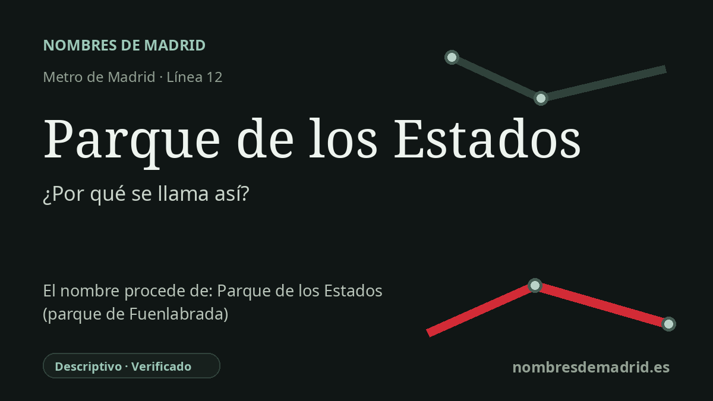

Publicado el · Investigación de Nombres de Madrid · Cómo verificamos cada origen · 8 fuentes consultadas
Respuesta rápida
Parque de los Estados toma su nombre del parque fuenlabreño situado junto al entorno de la estación. El nombre forma parte de una trama local de calles con nombres de países y ciudades americanas, alrededor de la Avenida de los Estados, la Calle de Venezuela y la Calle de La Habana.
La historia del nombre
El nombre Parque de los Estados es literal y local. MetroSur dio a la estación el nombre del cercano Parque de los Estados, un espacio verde público de Fuenlabrada, no el de una persona, un acontecimiento o una antigua aldea. La página de MetroSur de la Comunidad de Madrid sitúa la estación en la confluencia de las calles Venezuela y Habana, y el Consorcio Regional de Transportes enumera accesos por la Avenida de los Estados, la Calle de La Habana y la Calle de Venezuela.
El nombre del parque forma parte de un patrón urbano más amplio. En torno a la estación, el callejero de Fuenlabrada reúne nombres americanos: Venezuela, La Habana, Lima, Bolivia, Brasil, Caracas, Ecuador, Perú, Uruguay, Puerto Rico y República Dominicana aparecen en el mismo sector. En ese contexto, la Avenida de los Estados no es un nombre aislado, sino el eje de un paisaje urbano con una temática reconocible.
El parque es anterior a MetroSur. Una descripción local de la Ruta Verde de Fuenlabrada registra el Parque de los Estados como un parque de 16.730 metros cuadrados, creado en 1980 y ampliado en años posteriores, en la confluencia de la Avenida de los Estados y la Calle Venezuela. El anuario estadístico del Ayuntamiento de Fuenlabrada confirma que el Parque de los Estados figura entre los grandes parques municipales, de más de 10.000 metros cuadrados.
La estación se inauguró con la línea 12, MetroSur, el 11 de abril de 2003. MetroSur se construyó como línea circular para los municipios del sur metropolitano, uniendo Alcorcón, Móstoles, Fuenlabrada, Getafe y Leganés y conectándolos de nuevo con la red de Metro de Madrid y Cercanías. En Fuenlabrada, Parque de los Estados fue una de las cinco estaciones originales de MetroSur al servicio de la ciudad.
Un detalle de la ficha existente debe manejarse con cautela: La Pollina es, efectivamente, un espacio verde y ambiental municipal cercano, documentado por el Ayuntamiento, pero no se ha encontrado una fuente directa que demuestre que el entorno exacto de la estación se llamara antiguamente La Pollina. La explicación pública más sólida es, por tanto, más sencilla: la estación toma el nombre del parque, y el parque se entiende dentro de la temática americana de las calles que lo rodean.